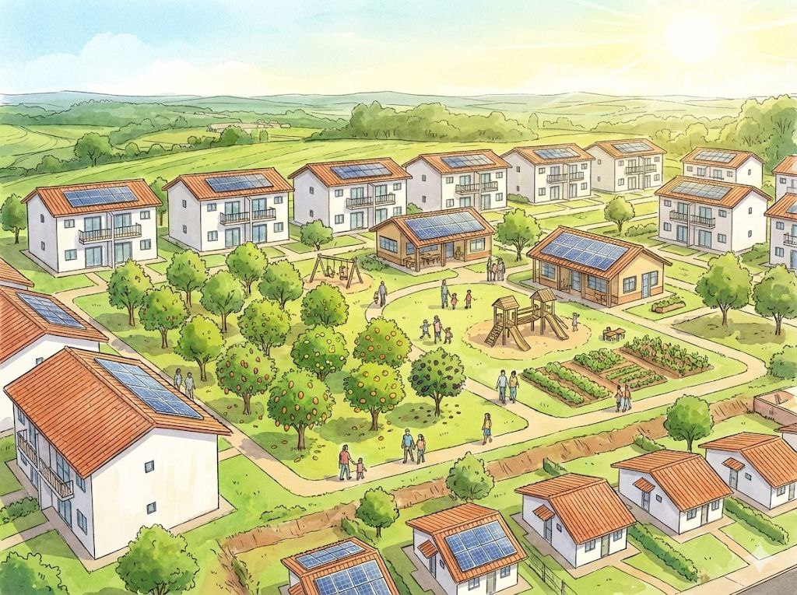
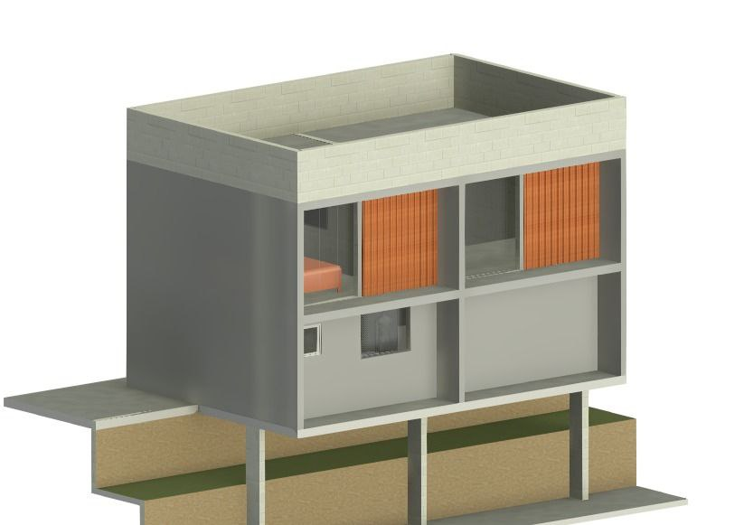
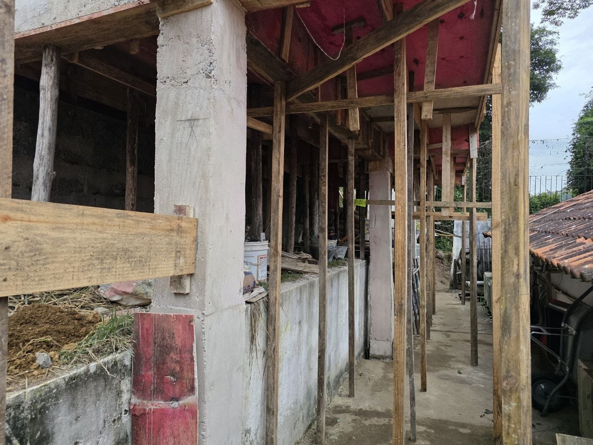
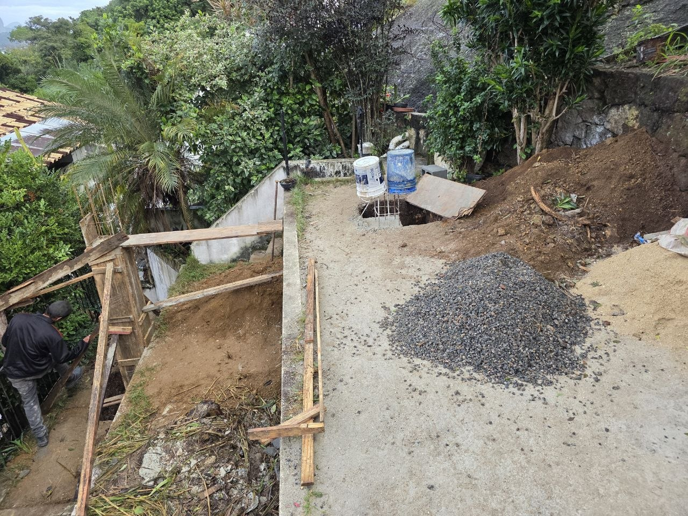
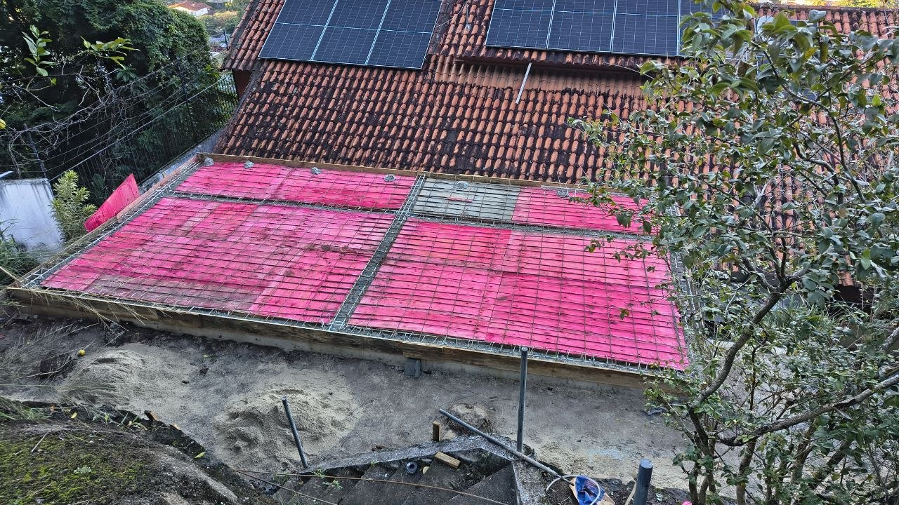
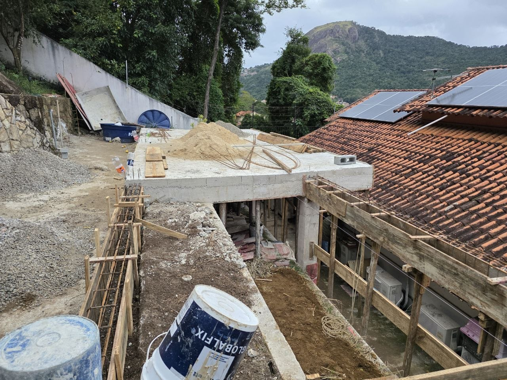
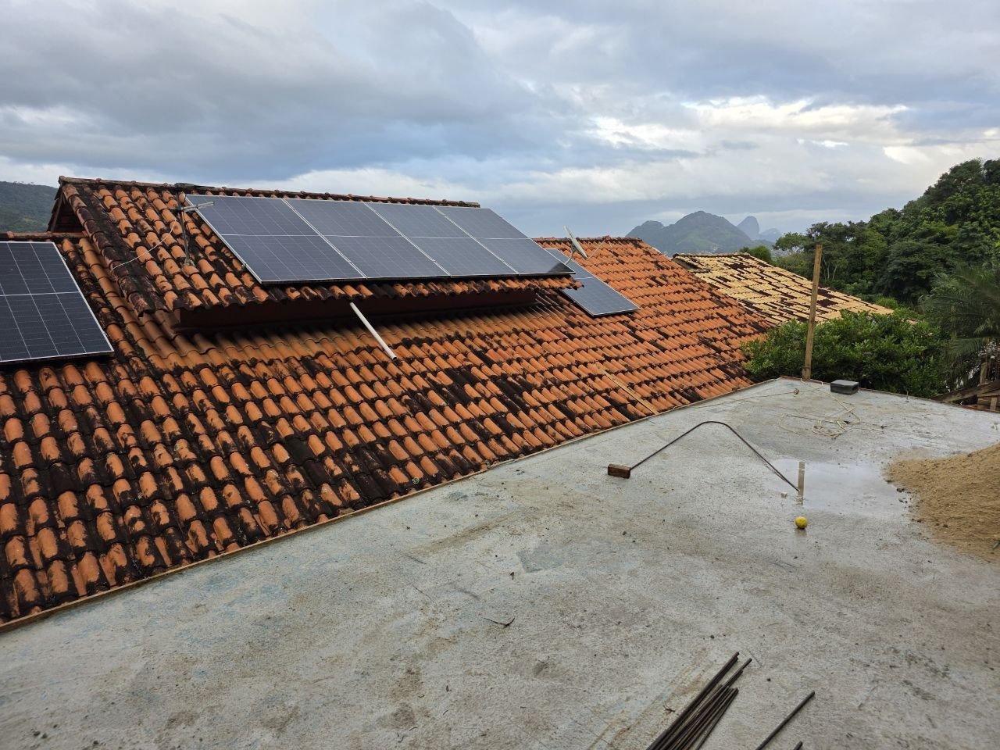

Etapas do projeto: onde estamos e o que vem depois
Estamos preparando o primeiro projeto no Rio de Janeiro. As datas vêm quando a forma jurídica e o primeiro imóvel estiverem confirmados.
Por que construir um lar? Todo mundo entende o que isso significa. É uma necessidade profundamente emocional, psicológica, espiritual e sagrada.
Preparado por Rafael Britto, fundador e construtor no Rio de Janeiro, e John, comunicação e ferramentas digitais.
Como planejamos?
Planejamos às claras, com um método que designers usam: primeiro entender o problema com quem vive nele, depois defini-lo, depois experimentar soluções e testá-las. Cada teste pode nos fazer voltar um passo. Ver em que ponto estamos ajuda você a entrar na hora certa.
O que acontece agora e o que vem depois?
Agora, quatro frentes de preparação ao mesmo tempo. Depois, três etapas, uma de cada vez: primeiras casas, mais bairros e uma plataforma para proprietários.
Estamos aquiAgora: em preparação
A forma jurídica e o imóvel
Mostrar detalhesEsconder detalhesO nosso construtor cuida desta parte, trabalhando com os seus próprios advogados e a sua contadora.
Estamos escolhendo a forma jurídica, organizando os documentos do imóvel, fazendo o orçamento da obra em reais e escrevendo as condições para morar e comprar. Também estamos conversando com famílias que podem vir a morar lá.
Regras feitas com os moradores
Mostrar detalhesEsconder detalhesOs futuros moradores ajudam a escrever as regras: o uso dos espaços comuns, quanto se pode gastar e como questionar uma decisão ou trocar um representante. Nenhuma regra vale antes de os moradores darem a sua opinião.
Um teste de pagamentos que qualquer pessoa pode conferir
Mostrar detalhesEsconder detalhesAinda precisamos de pessoas para pagamentos, contabilidade e revisão técnica.
Antes de usar os recursos de qualquer pessoa, testamos com um valor pequeno: quem aprova, se o registro bate com a conta do banco e como recuperar o acesso se alguém perder.
Recursos para o que já prometemos
Mostrar detalhesEsconder detalhesAinda precisamos de um contador e de pessoas para a administração.
Estamos organizando as finanças para que sempre haja o suficiente para pagar as despesas e cumprir o que já prometemos, mesmo nos meses de pouca receita. Se faltar, nada novo é gasto até haver um plano para cobrir.
Depois, uma etapa de cada vez
1. Primeiras casas
Começa quando houver financiamento e licençasMostrar detalhesEsconder detalhesPrimeiro um piloto num apartamento que já existe, depois as primeiras casas novas, com a construtora de Rafael como construtora proposta. Um fiscal independente confere a obra, e as famílias se mudam quando as casas estiverem seguras e os contratos assinados.
Um piloto deve começar perguntando a cada família sobre suas escolhas, sua renda e seu acesso a transporte, escola e serviços.
Depois dos primeiros meses de moradia, vemos quanto as casas custam de verdade para manter e se os reparos funcionam bem.
2. Mais bairros
Depois de avaliar as primeiras casasMostrar detalhesEsconder detalhesQuando as primeiras famílias estiverem instaladas e as casas se mostrarem sólidas, mais bairros podem vir. Cada custo e pagamento das primeiras casas fica aberto para conferir, para que novos financiadores e donos de imóveis adequados possam avaliar por conta própria antes de participar. Cada novo lugar compartilha projetos e compras com os outros, e os moradores decidem as próprias questões locais.
Damos o próximo passo quando as primeiras casas funcionam e todo compromisso já assumido está coberto.
3. Uma plataforma para proprietários
Depois que as primeiras etapas mostrarem resultadosMostrar detalhesEsconder detalhesProprietários poderiam vender seus imóveis pelo aluguel com compra, ou oferecer moradia compartilhada. Trazer proprietários exige uma organização muito mais confiável do que uma startup: com histórico, capaz de dar garantias e seguro.
O token vem só depois que a organização jurídica existir e as primeiras casas mostrarem um negócio que funciona. Seja qual for o resultado de uma votação, só a família e a IMOBX juntas, dentro da lei, podem mudar o contrato de moradia de uma família.
Quais imóveis são candidatos para o nosso primeiro morador em aluguel com compra?
Hoje o candidato é o apartamento de um dos fundadores.
Um imóvel se qualifica quando a propriedade, um contrato escrito e o consentimento da família estão no papel.
| Imóvel | O que existe | Situação |
|---|---|---|
| O apartamento de um dos fundadores | Alugado a uma família que o banco recusa por não ter entrada (fundadores, julho de 2026) | Candidato |
| Dois lofts | Um contrato de obra informado em 20 de janeiro de 2026, que na época aguardava o primeiro depósito | Uma obra própria da construtora de Rafael; última atualização registrada em janeiro de 2026 |
| Vila de pelo menos 36 casas | Orçamento do nosso construtor, de 30 de novembro de 2025 | Conceito; depende de terreno, financiamento e escala |
Como poderia ser a primeira vila?
Rafael planejou a primeira vila com casas de 45 m² em volta de um pátio comum, com energia solar, um pomar e lugares para brincar e estudar.


O que a construtora está fazendo?
Em janeiro de 2026, a construtora do Rafael assinou um contrato para construir dois lofts, como um primeiro teste da ideia da IMOBX. A construtora prepara esses projetos e define a própria agenda.

Pilares e paredes de blocos 
Concreto 
Fôrmas 
Telhado 
Telhado solar
Fotos do arquivo da nossa equipe. Ainda estamos confirmando onde e quando cada uma foi tirada. Todas as fotos e desenhos dos lofts
Quem decide em cada etapa, e o que estamos decidindo agora: Governança local.
O que está decidido, e o que ainda não
Parceiros e famílias precisam saber exatamente no que estão entrando, por isso listamos o que está decidido e o que ainda está em aberto.
Onde a IMOBX está hoje
- A IMOBX é uma proposta em preparação no Rio de Janeiro. Nada está à venda nem para alugar, e nenhuma casa está sendo oferecida.
- A IMOBX ainda não tem forma jurídica. Ela está sendo escolhida com assessores brasileiros.
- Nenhum contrato foi assinado: nem com famílias, nem com construtoras, proprietários ou financiadores.
- Nenhum órgão regulador aprovou nada, e o site não afirma ter nenhuma aprovação.
- O plano completo e as suas etapas: Etapas do projeto.
Casas e famílias
- Os desenhos e as fotos mostram a proposta. Não são anúncios de casas disponíveis, e o modelo dos lofts é um estudo de projeto.
- O preço, o valor mensal, o prazo e quem pode participar são definidos para cada projeto, num contrato escrito, antes de qualquer mudança.
- Devolução, prazo de tolerância ou desconto só valem quando estiverem escritos nesse contrato.
- Entrar no grupo do Telegram, ou apresentar um imóvel, um serviço ou a si mesmo, não confirma nenhum acordo, nenhum trabalho e nenhuma casa reservada.
Recursos
- Os recursos viriam de doações, editais e investimento, na medida em que a forma jurídica escolhida permitir.
- Investimento só é oferecido por um caminho legal e com direitos escritos. Nenhum retorno é prometido.
- As contas da obra são pagas com recursos já garantidos.
Leis
- As regras que se aplicam são o cadastro fiscal da Receita Federal, o Código Civil sobre quando a propriedade passa a outra pessoa e a Lei 13.019 para parcerias com o poder público.
Pessoas
- Os direitos e deveres de cada pessoa dependem de contratos assinados e de registros oficiais.
O grupo do Telegram
- O grupo da IMOBX é aberto: todos nele veem o que você publica. Não inclua telefone, endereço nem documentos. As orientações completas estão na mensagem de boas-vindas do grupo.
Definimos esses pontos com quem participa. Se você pode ajudar em algum deles, apresente-se no grupo.
Apresente-se